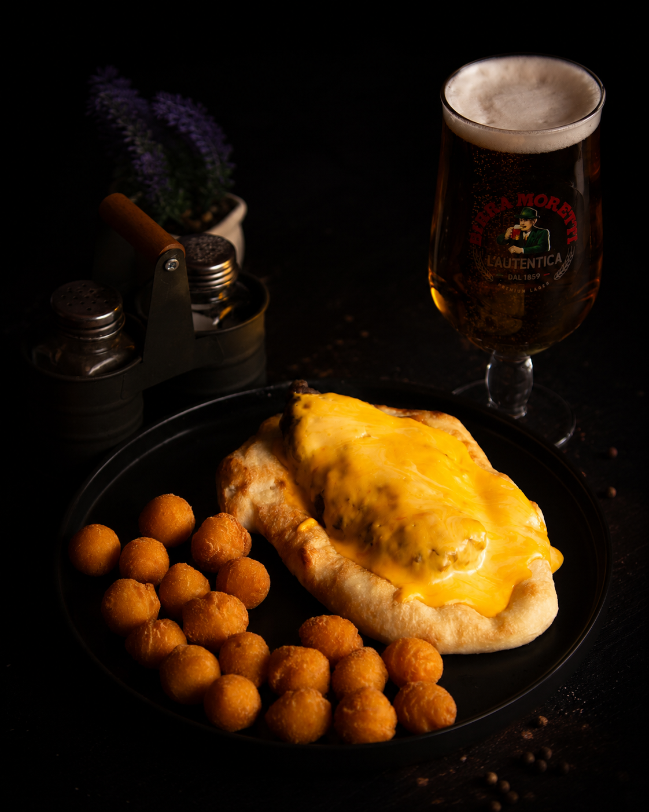
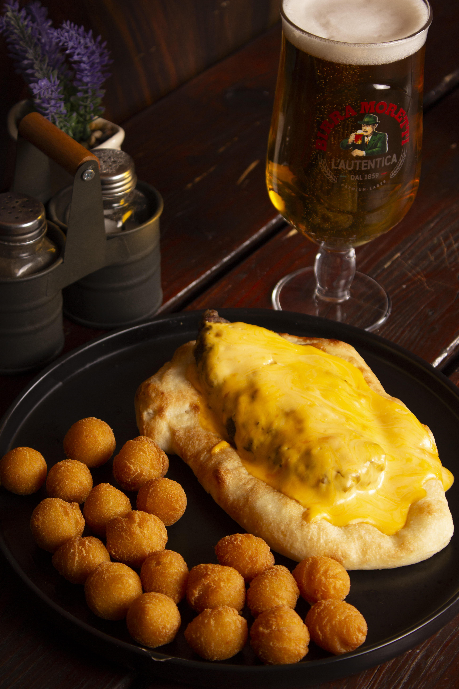
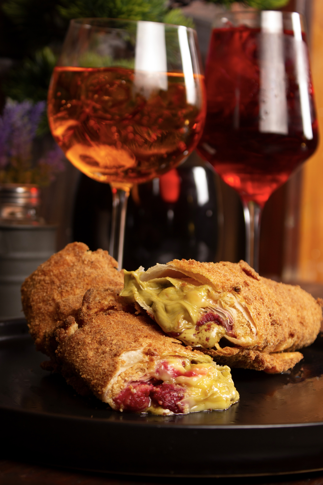
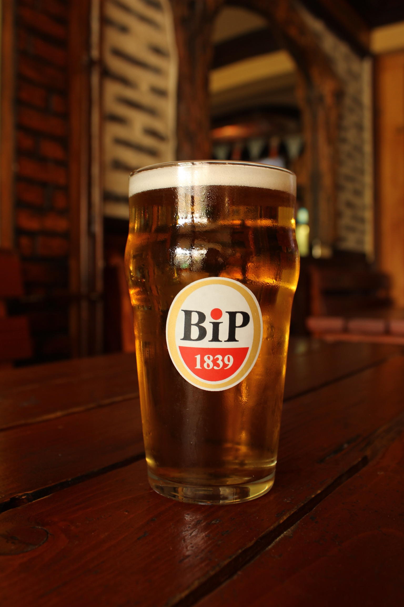
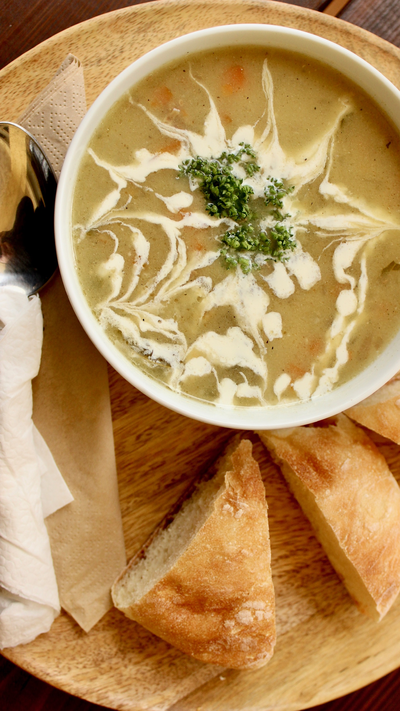
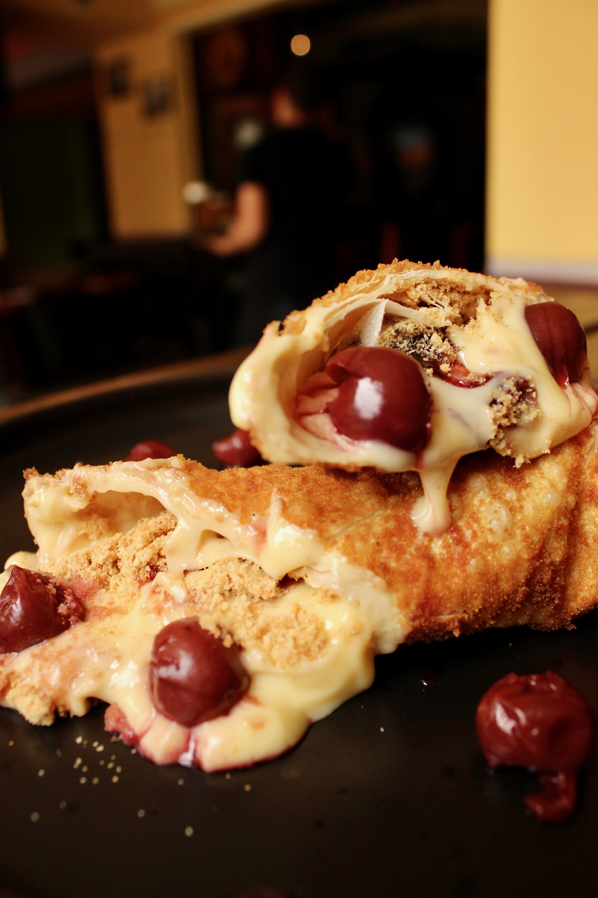
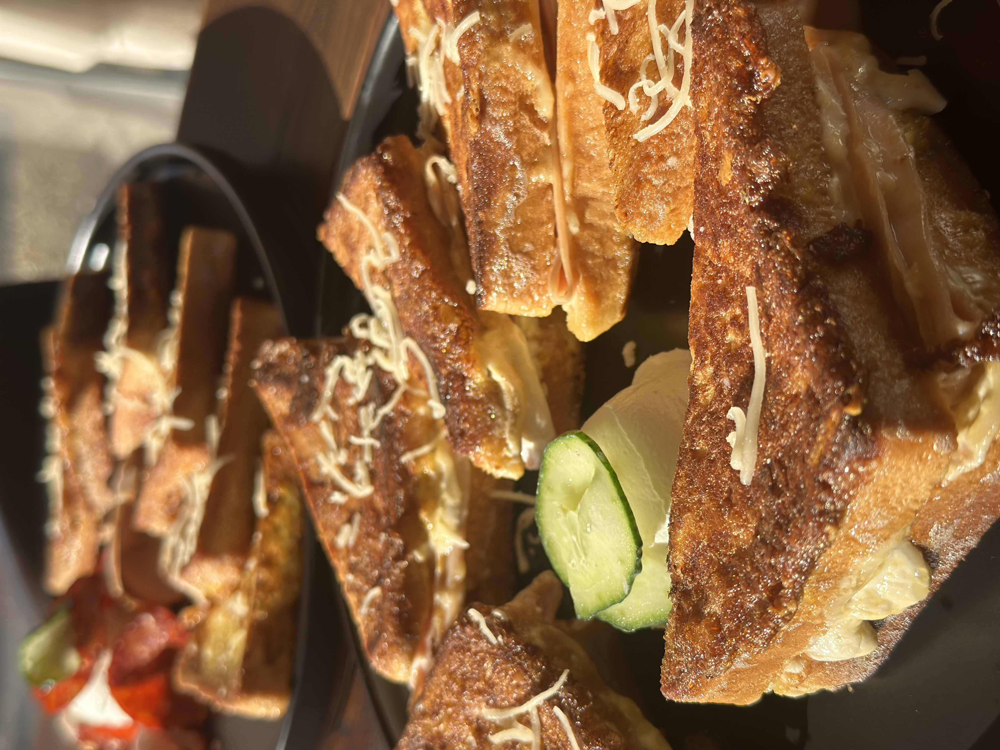
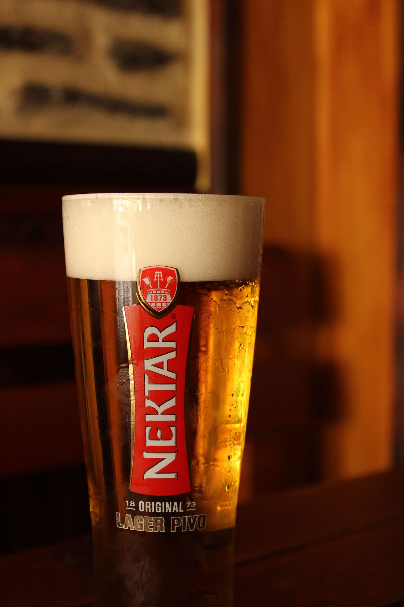

Beertija
Pivnica na Vidikovcu · od 2014
Hladno pivo
i dobra hrana
Bilijar, pikado, bašta, prenosi na 3 TV-a i Pub Quiz uz točeno pivo iz šest točilica i kuhinju koja radi svaki dan.

Točeno pivo
Šest točilica, uvek hladno i sveže.
Kuhinja svaki dan
Uto–sub 08:00–22:30
Ned i pon 14:00–22:30
Bilijar & pikado
4 stola za bilijar i 3 pikada.
Prijatna bašta
Bašta, Pub Quiz i prenosi na tri TV-a.
Iz naše kuhinje
Ono po čemu nas pamte

Čedar pljeskavica na pizza testu
Punjena čedarom na pizza testu sa hrskavim krompir kuglicama.
1100 RSD

Ćevapi
Pazarski ćevap 33g, biraš broj, uz priloge.
70 RSD / kom

Pohovane pite
Hrskave pohovane pite, slane i slatke.
500 RSD

10+
godina rada
O Beertiji
Mesto gde se svrati na jedno, pa ostane na tri
Beertiju smo otvorili 2014, sa željom da postane omiljeno mesto svima koji vole dobru hranu, hladno točeno pivo i dobro društvo.
Uz veliki izbor pića, koktela i kafe, kod nas te čekaju bilijar, pikado, Pub Quiz, prijatna bašta i sportski prenosi na tri televizora.
Šta te čeka
Razlozi da svratiš
01
Hrana
02
Točeno pivo
03
Happy hour
jeftinija kafa do 12
04
Kokteli
05
Bilijar
06
Pikado
07
Bašta
08
3 TV-a za sport
09
Pub Quiz
10
Svirke
Jelovnik
Šta ima da se jede
Cene su u dinarima (RSD)
Doručak
Kompet lepinja
490
Čedar omlet tortilja
omlet sa šunkom i pavlakom u tortilji, preliven čedarom
470
Ham & eggs
3 jaja, šunka, zelena salata, pavlaka, paradajz, pola somuna
430
Bacon & eggs
3 jaja, slanina, zelena salata, pavlaka, paradajz
440
Italijanski omlet
jaja, šunka, pečurke, kačkavalj
430
Spanać omlet
430
Ortolana omlet
jaja, tikvice, pečurke, paprika, plavi patlidžan, praziluk
430
Prženice
pavlaka, kulen, pečenica, kečap
460
Punjene prženice šunkom i kačkavaljem
490
Palenta
jogurt, feta
360
Palenta 4 vrste sira i slanina
460
Popara
280
Jogurt
100
Sendviči i hleb
Standard
450
šunka, kulen ili pečenica; pavlaka, zelena salata, paradajz, kačkavalj, kečap, majonez
Klub sendvič
pavlaka, majonez, senf, piletina, slanina, zelena salata, pomfrit
850
Beertija ciabatta sendvič
pavlaka, dva jaja na oko, slanina, kačkavalj, zelena salata, kečap, majonez
550
Kuba sendvič
puter, senf, suvi vrat, kiseli krastavčići
550
Tuna sendvič posno
posni puter, tuna, zelena salata, kiseli krastavčići
530
Sendvič sa šampinjonima
posni margarin, posni kačkavalj
430
Hleb
Somun
95
Focaccia
320
Brusketi
190
Pica i pasta
Kapricioza
pelat, šunka, kačkavalj, pečurke
850 / 500
Diavola
pelat, kulen, feferone, kačkavalj
900 / 550
Pizza bolognese
bolognese sos, kačkavalj, pavlaka
800 / 550
Vegeteriana
pelat, paprika, tikvica, plavi patlidžan, pečurke
800 / 500
4 godišnja doba
pelat, slanina, kulen, šunka, pečenica, jaje
950 / 600
Piroška pečenica
760
Pica testo sa grilovanim povrćem
500
Pasta
Quattro formaggi (4 sira)
890
Piletina-pesto sos
890
Chilly lillys pasta
penne u pikantnom sosu sa junećim mesom
890
Carbonara
sos od mocarele i pančete
890
Arrabiata
800
Pohovane pite
Slane
4 vrste sira i piletina
650
Pesto piletina
650
Pizza pita
650
Bolognese pita
650
Slatke
Nutela plazma
600
Višnja, vanila i plazma
600
Pistać, vanila, malina i plazma
600
Kuvana jela
Teleća čorba (ponedeljak)
400
Riblja čorba (sreda)
450
Pasulj / prebranac i kupus salata (petak)
600
Sarma mrsna / posna
600
Salate
Šopska
400
Paradajz salata sa sirom i lukom
300
Kupus salata
280
Lučana paprika
230
Krastavac salata sa pavlakom
300
Obrok salate
Cezar salata
900
Tuna salata
850
Burgeri i pljeskavice
Classic burger
single 1100 / double 1500
150g junećeg mesa, cheddar, burger sos, bbq sos, pomfrit
Cheddar bacon burger
150g junećeg mesa, slanina, cheddar, burger sos, bbq sos, preliveno čedar sosom, pomfrit
1300
Čedar pljeskavica
pljeskavica punjena čedar sosom na pizza testu, uz hrskave krompir kuglice
1100
Kobasice, ćevapi i uštipci
Neljuta sa sirom
730
Ljuta sa sirom
730
Lucifer
730
Ćevapi i uštipci
Pazarski ćevap 33g
cena po komadu
70
Birtija ćevapi u pizza testu
5 ćevapa u pizza testu sa kajmakom i kačkavaljem
750
Uštipci sa slaninom, kačkavaljem i lukom
750
Krilca, piletina i riba
Ljuta / neljuta
650
Ljuto, med i susam
650
Senf med
650
BBQ sos
650
Sa belim lukom
650
Piletina
Zapečene pileće grudi u sosu od kajmaka
pirinač, pomfrit, grilovano povrće
880
Zapečene pileće grudi u sosu od pečuraka
pirinač, pomfrit, grilovano povrće
880
Pohovana piletina štapići
+ 2 sosa po izboru
730
Riba
Girice
450
Krompir, dodaci i sosovi
Pomfrit
350
Hrskave krompir kuglice
340
Čedar pomfrit
440
Pekarski krompir
350
Onion rings
320
Kajmak
200
Naćosi i 3 sosića
500
Sosići
Dimljeni birtija sos
90
Tartar sos
90
Burger sos
90
Senf med sos
90
BBQ sos
90
Čedar sos
200
Palačinke
Slane
Zapečene palačinke
crveni pesto, slanina, neutralna pavlaka, mocarela
600
Palačinka sa pečenicom
390
Palačinka sa šunkom
370
Palačinka sa kulenom
390
Slatke
Birtija palačinka
pistać krem, vanila, malina i plazma
550
Palačinka nutela
360
Palačinka džem
320
Palačinka krem
350
Dodaci
Plazma
50
Plazma u mleku
70
Višnja
50
Malina
50
Banana
50
Puding od vanile
100
Kolači
Trileće
500
Plazma mak kolač
490
Baklava
450
Baklava eurokrem plazma
490
Čiz kejk
480
Sa točilice
Šest točilica, uvek hladno
Domaći i strani lageri direktno sa točilice, sveži, penušavi i uvek ledeni.
Bip
Heineken
Birra Moretti
Nikšićko
Zaječarsko
Nektar

Galerija
Kako to izgleda kod nas





Gde smo
Svrati, tu smo
Adresa
Kneza Višeslava 63, Beograd
Instagram
Radno vreme
Pivnica, svaki dan08:00 - 00:00
Kuhinja, uto - sub08:00 - 22:30
Kuhinja, ned i pon14:00 - 22:30
Lokacija
Kneza Višeslava 63
TC Bazar, Vidikovac
TC Bazar, Vidikovac
Radno vreme
Svaki dan
08:00 - 00:00
08:00 - 00:00
Pozovi nas
069 247 8452
069 282 723
069 282 723
Zaprati nas
@beertija_pub
na Instagramu
na Instagramu